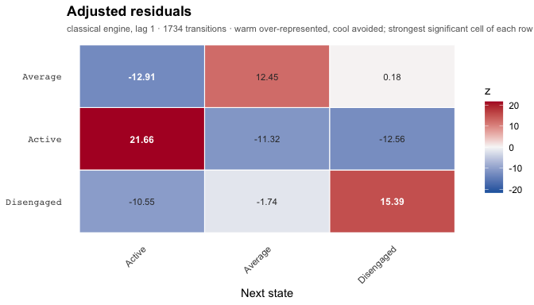

Vignettes and guides
Vignettes
Guides
- A complete workflow
- Event logs and interoperability
- Engines: classical, two-cell, bidirectional and dominance tests
- Lags and structural zeros
- Plotting lag sequential models
- Transfer entropy between states
Case studies
Overview
lagdynamics finds which events tend to follow which in categorical, time-ordered data: sequences of behaviours, dialogue moves, learning actions or other coded events. Lag sequential analysis (Sackett, 1979; Bakeman & Gottman, 1997) counts how often each state follows each other state at a given lag and tests every pair against the count expected if successive events were independent. The pairs that occur more or less often than expected form a lag transition network: a directed graph of the sequential contingencies in the data, which shows which actions tend to follow one another and which rarely do. Each transition can be assessed with bootstrap intervals, analytic Bayesian certainty, case-drop stability, split-half reliability and a permutation null, and groups can be compared by permutation or by a Bayesian Dirichlet-multinomial contrast.
The model is fitted with one function, lsa(), from wide sequence data, lists of sequences or long event logs, with a choice of the classical test and four further engines (two-cell, bidirectional, and parallel and non-parallel dominance), multiple lags and structural zeros. Results are read as tidy data frames with transitions(), nodes(), tests(), initial() and summary(), drawn as residual heatmaps, lag transition networks, chord diagrams and sunbursts, and passed to the tna and cograph packages.
The method
Events are pooled into a lagged contingency table whose cell counts how often state occurs steps after state , counting within sequences only. With row totals , column totals and transitions, the expected count under independence of successive events is , and the transitional probability is . The departure of a cell from independence is measured by its adjusted residual (Haberman, 1973),
which is approximately standard normal under independence. A large positive marks a transition that occurs more often than chance; a large negative one, a transition that is avoided. Yule’s gives the strength of the same association on a to scale, and the tablewise likelihood-ratio test asks whether the table as a whole departs from independence. Cells that cannot occur by design (for example, self-transitions in coded turn taking) are declared as structural zeros, and the expected counts are then estimated by iterative proportional fitting under quasi-independence.
Installation
install.packages("lagdynamics")
# development version
install.packages("remotes")
remotes::install_github("mohsaqr/lagdynamics")Example data
The package includes four datasets: engagement (engagement states of students over successive periods, in wide format), group_regulation (coded collaborative regulation in wide format), group_regulation_long (the same kind of data as a long event log with actor, achievement group and time stamp) and ai_long (coded AI behaviours in human-AI programming sessions, as a long event log).
Fitting a model
lsa() fits the classical engine at lag 1 by default. The print method shows the size of the data, the tablewise test, the strongest over-represented transitions and the initial-state distribution.
library(lagdynamics)
fit <- lsa(engagement)
fit
#> Lag Sequential Analysis - classical (lag 1, directed)
#> 3 states | 1734 transitions | 1870 events | 136 sequences
#> states: Active, Average, Disengaged
#> independence: G² = 618.3, df = 4, p <2e-16
#>
#> Significant transitions (p < 0.05): 7 of 9
#> strongest over-represented (of 3):
#> Active -> Active z = +21.7 ***
#> Disengaged -> Disengaged z = +15.4 ***
#> Average -> Average z = +12.5 ***
#>
#> Initial states:
#> Active 0.382 ████████████████████████
#> Average 0.368 ███████████████████████
#> Disengaged 0.250 ████████████████Reading the transitions
transitions() returns one row per transition with the observed and expected counts, the transitional probability, the adjusted residual and its p-value, and Yule’s . Arguments select and order rows.
transitions(fit, significant = TRUE, sort = "strength")
#> from to lag count expected prob prob_col adj_res p yules_q
#> 1 Active Active 1 459 247 0.698 0.7051 21.7 4.60e-104 0.828
#> 2 Disengaged Disengaged 1 157 60 0.483 0.4906 15.4 1.90e-53 0.754
#> 3 Average Active 1 153 282 0.204 0.2350 -12.9 4.16e-38 -0.601
#> 4 Active Disengaged 1 23 121 0.035 0.0719 -12.6 3.64e-36 -0.826
#> 5 Average Average 1 458 330 0.610 0.6003 12.5 1.35e-35 0.553
#> 6 Active Average 1 176 290 0.267 0.2307 -11.3 1.06e-29 -0.534
#> 7 Disengaged Active 1 39 122 0.120 0.0599 -10.5 5.11e-26 -0.698
#> kappa kappa_z kappa_p lift sign significant
#> 1 0.444 19.19 4.68e-82 1.858 over TRUE
#> 2 0.314 13.56 7.34e-42 2.618 over TRUE
#> 3 -0.499 -14.70 6.81e-49 0.543 under TRUE
#> 4 -0.827 -13.41 5.14e-41 0.189 under TRUE
#> 5 0.227 9.83 7.97e-23 1.386 over TRUE
#> 6 -0.424 -12.48 9.39e-36 0.608 under TRUE
#> 7 -0.707 -11.46 2.03e-30 0.320 under TRUEEvaluating the transitions
bootstrap_lsa() resamples sequences and gives a confidence interval for each transition’s residual, probability and Yule’s ; transitions(boot) returns them as one row per transition.
set.seed(2026)
boot <- bootstrap_lsa(fit, R = 200)
boot
#> <lsa_bootstrap>
#> engine: classical
#> level: sequence
#> replicates: 200
#> CI level: 95%
#> stable edges: 7 of 9Plotting
plot() draws a fit as a residual heatmap (the default), a lag transition network, a chord diagram or a sunburst.
plot(fit)
plot of chunk heatmap
Comparing groups
With a long event log, group names a column, and one model is fitted per group on a shared set of states. compare_lsa() tests each transition’s difference by permuting group labels; here the p-values are adjusted for multiplicity with the Benjamini-Hochberg method.
gfit <- lsa(group_regulation_long, actor = "Actor", action = "Action",
time = "Time", group = "Achiever")
set.seed(2026)
cmp <- compare_lsa(gfit, R = 200, adjust = "BH")
cmp
#> <lsa_comparison>
#> groups: High vs Low
#> measure: log_or difference (High - Low)
#> R: 200 label permutations
#> edges: 39 significant of 78 tested (adjust = BH)
#> omnibus: statistic = 79.48, p = 0.004975Authors and citation
lagdynamics is written by Mohammed Saqr and Sonsoles López-Pernas. To cite the package, run citation("lagdynamics").